When you order, use the proper name. Many companies use numbers to describe the instruments, but a different company may use a different number. If you use the proper name along with the number given here, most companies will understand what you want. (See page 207.)
The Four Basic Instruments
You can take out most teeth with these 4 instruments:
A spoon or probe…
… an elevator…
… and two forceps upper universal forcep lower universal forcep
Use this to
An elevator will
Use forceps to pull out the separate the gum loosen a tooth, or lift tooth. There is one for upper from the tooth.
out a broken root.
teeth and one for lower teeth.
Other forceps can be useful, especially for taking out a strong back tooth.
They have pointed beaks that are made to fit between the roots of a back molar. As a result, you can hold onto the larger tooth better.
'cowhorn’
forcep lower molar
'hawk’s bill’
forcep
18R right left upper upper molar molar forcep forcep


Curved elevators are good for taking out broken roots. You can force their pointed ends more easily between the root and the bone that is holding it.
Cryers elevators
Unfortunately, forceps and elevators are expensive. If you want to order more than the 4 basic instruments (page 155), remember the cost.
WHERE YOU WORK IS IMPORTANT
Work wherever it is light and bright. You must be able to see what needs to be done. Sunlight or light from a lamp is usually enough. Use a dental mirror
(page 145) to direct more light into the mouth.
Use a chair that has a back high enough to support the person’s head.
Think about how you can stand and work the most easily.
To take out a lower tooth, you need
To take out an upper tooth, you need to push down and then pull up.
to push up and then pull down.
So the person should be
So the person should be sitting down low.
sitting up high.
If you stand on a box, he will be lower.
If he sits on cushions, he will be higher.

HOW TO TAKE OUT THE TOOTH
Once you are certain which tooth must come out, decide which instruments you will need. Lay them out ahead of time on a clean cloth:
a syringe, needle, and local anesthetic forceps an elevator cotton gauze spoon instrument
Before you touch your instruments, be sure your hands are clean. Wash with soap and water, and put on clean plastic or rubber gloves. See pages 85 and 86.
Be sure, also, that your instruments are clean. See pages 87 to 90. Prevent infection—keep clean!
To take out a tooth, follow these
8 steps (pages 157–164):
1. Explain what you are going to do.
2. Inject local anesthetic.
3. Separate the gum from the tooth.
4. Loosen the tooth.
5. Take out the tooth.
6. Stop the bleeding.
7. Explain to the person what to do at home to look after the wound.
8. Help the person to replace the tooth with a false tooth.
1. Always begin by talking to the person. Explain why you must take out a tooth (or teeth) and tell how many teeth you will take out. Begin working only when the person understands and agrees.
2. Inject some local anesthetic slowly, in the right place. remember from Chapter 9 that the injection for a lower tooth is different from the injection for an upper tooth.
Wait 5 minutes for the anesthetic to work, and then test to be sure the tooth is numb. Be kind—always test before you start. If the person still feels pain, give another injection.

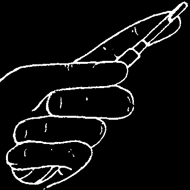


3. Separate the gum from the tooth.
The gum is attached to the tooth inside
Use this the gum pocket. Separate the gum and tooth before you take out the tooth. If you do not, the gum may tear when or this the tooth comes out. Torn gums bleed more and take longer to heal.
Slide the end of the instrument along the side of the tooth into the gum pocket. At the deepest part of the pocket, you can feel the
Front Side place where the gum attaches to the tooth.
Push the instrument between this attached part and the tooth. Then separate the tooth from the gum by moving the instrument back and forth.
Do this on both the cheek side (outside)
Back Side and the tongue side (inside) of the tooth.
The attached gum is strong, but it is also thin. Control your instrument carefully so that it only cuts through the part that is attached to the tooth. Do not go any deeper.
4. Loosen the tooth. A loose tooth is less likely to break when you take it out. Before you take out a strong tooth, always loosen it first with a straight elevator.
Caution: if you do not use it properly, a straight elevator can cause more harm than good.
It is important to hold a straight elevator properly.
Place your first finger against the next tooth while you turn the handle. This will control it.
remember that the sharp blade can slip and hurt the gums or tongue.
The blade goes between the bad tooth and the good one in front of it. Put the curved face of the blade against the tooth you are removing.
Slide the blade down the side of the tooth, as far as possible under the gum.
Turn the handle so that the blade moves the top of the
Put pressure on the bone, not the tooth bad tooth backward.
beside it. Do not loosen the good tooth!

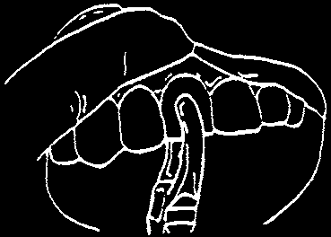

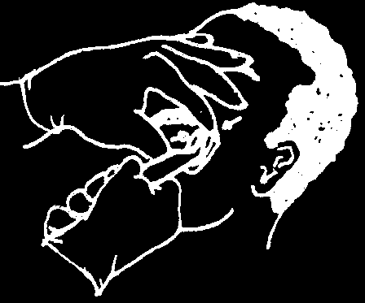
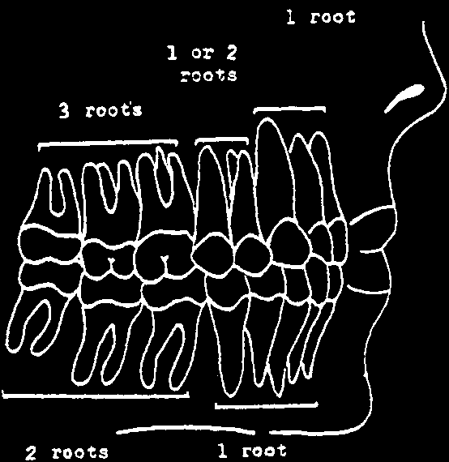

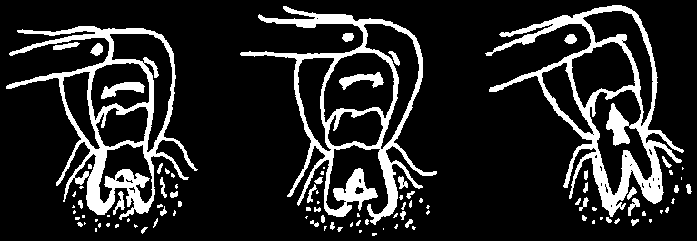
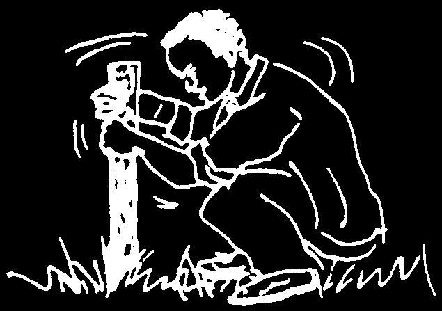
5. Now, take out the tooth. Push your forceps as far up the tooth as possible. The beaks of the forceps must hold onto the root under the gum.
YES
NO
Use your other hand to support the bone around the tooth. Your fingers will feel the bone expanding a little at a time as the tooth comes free.
With practice, you will be able to decide how much movement the tooth can take without breaking.
To decide which way to move a tooth, think about how many roots it has.
If a tooth has 1 root, you can turn it.
If a tooth has 2 or 3 roots, you need to tip it back and forth.
Take your time. If you hurry and squeeze your forceps too tightly, you can break a tooth.
Removing a tooth is like pulling a post out of the ground. When you move it back and forth a little more each time, it soon becomes loose enough to come out.

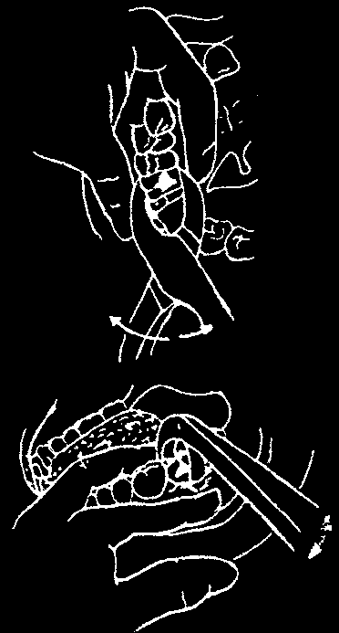
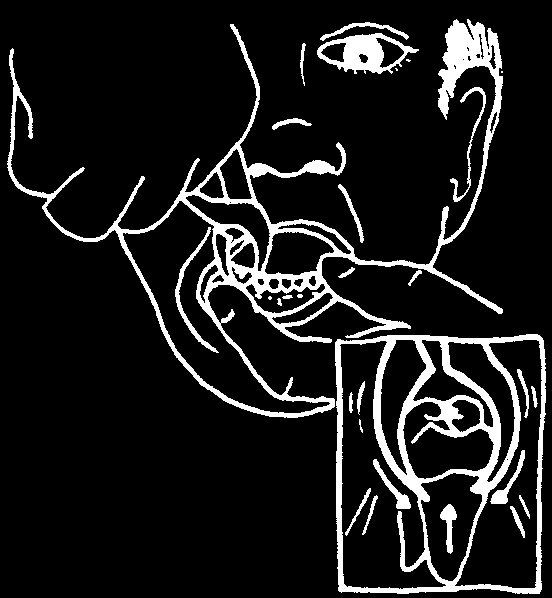

Front teeth come
Back teeth usually come straight out out toward the cheek
When you remove lower molars with the lower molar 'cow-horn’ forcep, you use it in a different way:
• Fit the points under the gum, between the tooth’s roots.
• Squeeze the handles gently and move them up and down, then side to side. This will force the points of the forcep further between the roots and lift the tooth up and out.
NOTE: some lower molars come out toward the tongue.
WARNING: Do not use the
'cowhorn’ forcep to take out a baby molar. Its points can damage the permanent tooth growing under it.
When the tooth comes out, look carefully at its roots to see if you have broken any part off and left it behind. Whenever possible, take out broken roots so that they do not cause infection Iater inside the bone.

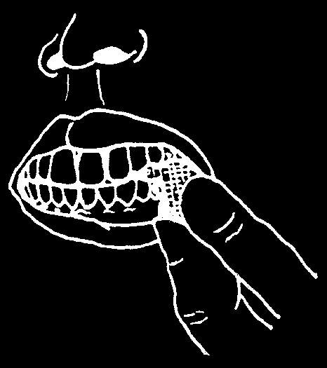

6. Stop the bleeding. Squeeze the sides of the socket (the hole that is left after you take out the tooth) back into place. Then cover the socket with cotton gauze and ask the person to bite firmly against it for 30 minutes. A child should bite firmly on the gauze for 2 hours. See page 142.
Whenever the gums are loose, join them together. To stop the bleeding and heal the wound, you must hold the gums tightly against the bone under them.
HOW TO PLACE A SUTURE
When you remove 2 or more teeth in a row, it is a good idea to join the gums with a suture (needle and thread). If you need more than one suture, place the first one nearest the front of the mouth and work toward the back.
The needle and thread you use must be sterile.
Boil both for 30 minutes. See page 88.
You will need an instrument to hold the needle firmly (hemostat) and scissors to cut the thread.
a) Pass the needle through the loose gum—the one you can move most easily. Then pass it through the more firmly attached gum.
If the looser gum is on the outside, you will bring the needle toward the tongue. Protect the tongue with a tongue blade or your dental mirror.
You must suture both the upper and the lower gums in this way.
After this you must tie 2 knots and cut the thread. See the next page.
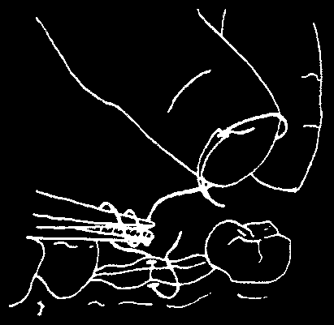
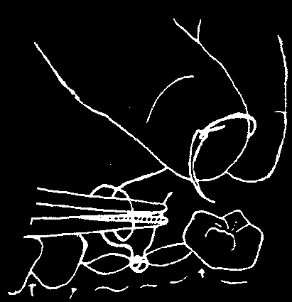
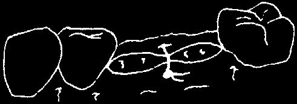
b) Pull the thread until about 4 cm of thread is left loose on the starting side.
Wrap the longer end of thread 2 times around the beaks of the needle holder.
Then grab the shorter free end of the thread with the tip of the needle holder. With the needle in your fingers, pull the needle holder in the opposite direction. The thread will slide off the beaks and form the first knot.
Tighten the knot onto the side of the wound, not on top of it.
c) Tie a second knot, to keep the first one tight.
Wrap the thread once around the beaks of the needle holder.
Grab the free end with the tip of the needle holder as you did before. Pull the
2 ends in opposite directions. The second knot will form over the first knot.
d) Cut the threads so that about.5 cm is left free. If the ends are too long, they will bother the person’s tongue. If they are too short, the knot may come open.
Then cover the area with cotton gauze.
Tell the person to:
• bite against the cotton for 1 hour to stop the bleeding, and
• return in 1 week for you to remove the thread.
There is a special kind of suture material that disappears by itself, which is good to use because the person does not have to return for you to remove sutures. Unfortunately, it is expensive. If you cannot afford it, use sewing thread and remove it 1 week later.
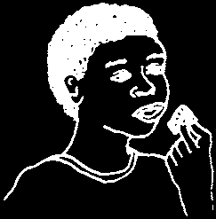
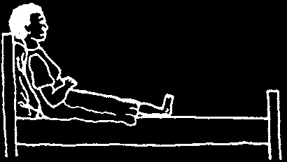

7. Explain to the person what you have done, and what to do at home to look after the wound. remember that her mouth is numb, so she cannot feel what is happening.
Taking out a tooth is like a small operation. There will be bleeding and later some pain and swelling. This is normal and should be expected.
Tell the person this. Then give the following advice:
• Bite firmly on cotton gauze for an hour, and again later if blood comes from the socket.
Always give the person some extra cotton gauze to carry home, in case bleeding starts again later.
Show her how to use the cotton gauze.
• Take aspirin or acetominophen for pain as soon as you need it, and then every 3 or 4 hours. See page 94.
• Keep your head up when you rest. This reduces bleeding because it is harder for blood to flow uphill. It also hurts less.
• Do not rinse your mouth. In some places people believe they should immediately rinse with salt water and spit a lot after a tooth comes out, but this is harmful! It is important for the blood clot to stay inside the socket and not wash away.
• Do not drink hot Iiquids like tea or coffee, because they encourage bleeding. However, cool Iiquids are good for you.
Drink a lot of water.
• Continue to eat, but be sure the food is soft and easy to chew.
Try to chew food on the side opposite the wound.
• Keep your mouth clean. Start on the second day and continue until the socket is well. To do this, rinse your mouth with warm salt water (page 7) and keep your teeth clean (pages 69–72), especially the teeth near the socket.
FALSE TEETH
After a tooth comes out, it is a good idea to replace it with a false tooth. If you do not, the other teeth soon starts to shift into the open space.
This weakens the bone around their roots.
After some years, they too become loose and sore, and they have to be taken out.
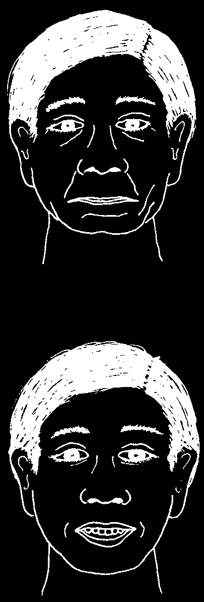
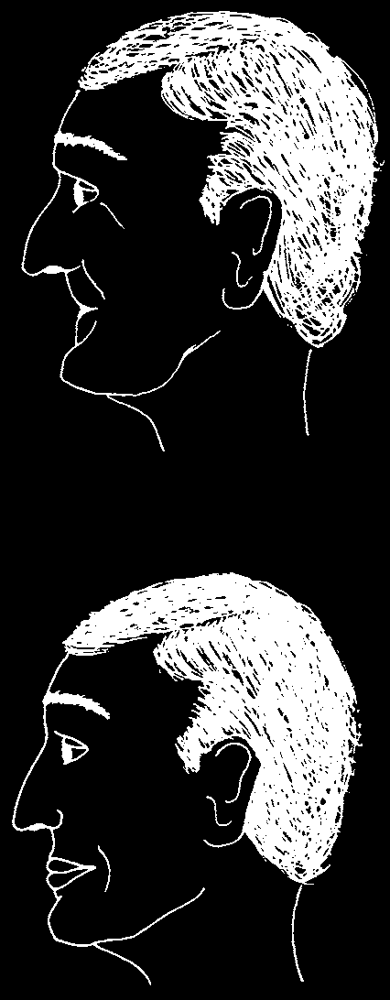
WHY fALSE TEETH ARE HELPfUL
When you take out a tooth, it is like removing a brick from the center of a wall. The area around the space becomes weaker and begins to crumble.
To prevent this, a plastic tooth can fit into the space. This tooth is not for chewing food but to hold the remaining teeth in their normal, healthy position.
A full set of teeth allows a person to chew the foods needed to stay healthy and feel good. Moreover, teeth help you look good!
A person without many teeth looks old.
With a new set of plastic 'false teeth’, the same person looks and feels much younger.
If possible, after you take out a tooth, encourage the person to replace the tooth with a plastic tooth. Find out where they are made and how much they cost. Then explain:
• how to clean the remaining teeth to prevent them from going bad
(pages 69–72), and
• how it is possible to get a replacement plastic tooth.
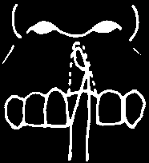
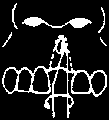

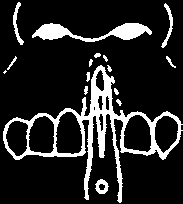
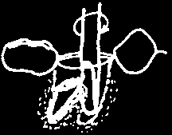

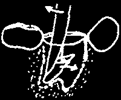